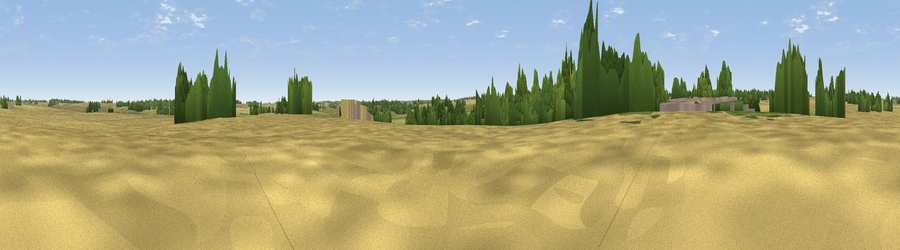

Viewpoint near Ropsley
#43724 in England · top 82% of its area beats it · near RopsleyWhere it is
The exact computed spot (SK 99644 34366). Click the marker for map links.
The view, rendered

A 360° render of this exact spot computed from the terrain model, tree cover and land cover — summer colours, afternoon light, calibrated against photographs of famous viewpoints. Real trees, hedges and buildings will differ in detail.
The panorama
Grey silhouette: terrain skyline in each direction (720 bearings, Earth curvature and refraction included). Dashed green: skyline with trees (+15 m) and buildings (+8 m) as obstacles. Blue strip: how far the ground is visible on each bearing.
Where the view opens
Wedge length = distance to the farthest visible ground on that bearing (vegetation-aware). Rings at 10, 25 and 50 km.
What fills the view
63% cropland · 26% grassland · 10% woodland ·
Angular shares of the visible panorama (visual magnitude), not map area. Landscape diversity 0.40 (0–1 Shannon).
Key numbers
More beautiful places nearby
The staircase of upgrades: each row has a higher view potential than everything closer. Driving times are estimates from straight-line distance, calibrated against real road routing — check an actual route before setting out.
| Place | Direction | Drive | Score |
|---|---|---|---|
| Viewpoint near Pickworth | ESE · 5 km | ~11 min | 29.2 |
| Viewpoint near Aisby | NE · 6 km | ~12 min | 38.1 |
| Viewpoint near Belton | NW · 6 km | ~14 min | 44.3 |
| Viewpoint near Grantham | WNW · 7 km | ~14 min | 46.4 |
| Viewpoint near Belton | NW · 7 km | ~15 min | 51.0 |
| Viewpoint near Great Gonerby | NW · 11 km | ~21 min | 52.5 |
| Viewpoint near Great Gonerby | WNW · 11 km | ~21 min | 62.0 |
| Viewpoint near Belvoir | W · 18 km | ~31 min | 70.8 |
52.89751, -0.52018 · source: osm peak · position refined by local search. Computed location — check access rights before visiting.